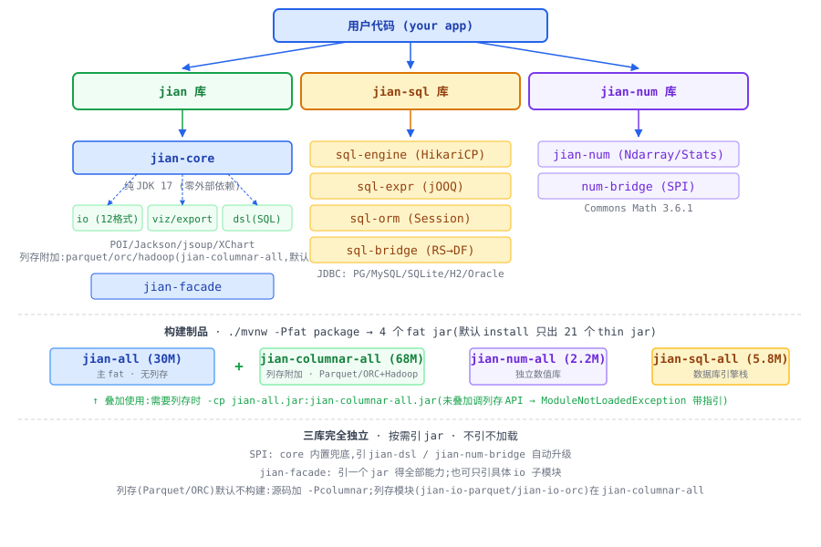

JIAN · 需求与接口说明书
以 玉简 之器,容数据之变;以 简化 之桥,渡语言之隙;以 简约 之道,立长久之基;以 吉安 之愿,佑用者之祥。
JVM 上的轻量数据栈,API 风格向 pandas / sqlalchemy / numpy 靠拢。
项目定位
在 JVM 上提供一套以数据导入导出与数据分析为目的(不追求极致运行速度)的轻量工具栈。三个相互独立的库按需引用,引哪个用哪个,不引就不加载。
jian = 拼音「简」= Java Integrated ANalysis。一字四关:玉简(数据之器)→ 简化(Python↔Java 之桥)→ 简约(不争极速)→ 吉安(ji·an,愿用者吉祥安康)。
不做什么(明确排除)
- ❌ 分布式 / 集群计算(那是 Spark / Flink 的领地)
- ❌ GPU 加速、极致性能优化
- ❌ 深度学习框架(PyTorch / TensorFlow)
- ❌ 实时流处理
- ❌ jian-num 不追求 1:1 复刻 numpy(只做 pandas 需要的子集)
三库切分
三个库解耦:jian-core 不强依赖 jian-sql;jian-sql 不依赖 jian;jian-num 完全独立。
| 库 | 对标 Python | 核心职责 | 依赖关系 |
|---|---|---|---|
| jian | pandas | 表格结构(DataFrame/Series)+ 变换 + IO(6 库 + 3 格式)+ 可视化 + 导出 | 可选依赖 jian-num |
| jian-sql | sqlalchemy | 连接管理、SQL 表达式、ORM、为 jian 喂数据 | 不依赖 jian |
| jian-num | numpy(子集) | pandas/统计分析会用到的数值与统计能力 | 不依赖任何 |
依赖全景图
用户代码按需引 jar;叶子模块依赖 core,core 不反向依赖任何叶子。运行时按需加载:用户不引 jian-io-excel,JVM 不会加载 POI 的类。

复用的成熟积木(均已核实活跃度)
| 积木 | 用途 | 版本 | 用在 |
|---|---|---|---|
| Commons CSV | CSV 读写 | 1.12.0 | jian-io |
| Apache POI | Excel 读写 | 5.5.1 | jian-io / export |
| Jackson | JSON 读写 | 2.18.x | jian-io |
| jsoup | HTML 解析 | 1.18.3 | jian-io |
| 各 JDBC 驱动 | PG/MySQL/SQLite/H2/Oracle/Access | — | jian-io-sql / jian-sql |
| XChart | 图表绘制 | 4.0.3 | jian-viz |
| jOOQ (OSS) | SQL 表达式 | 3.21.6 | jian-sql |
| HikariCP | 连接池 | 5.1.0 / 6.x | jian-sql |
| Commons Math | 描述统计 | 3.6.1 | jian-num |
| JUnit 5 | 测试(仅测试期) | 5.10.x | 全部 |
开发路线图
依赖驱动,串行推进。
里程碑
| 里程碑 | 包含 | 能干什么 |
|---|---|---|
| M0 jian-num MVP | jian-num | 描述统计、分位数、随机数 |
| M1 core 基础 | core §3.1-3.8 | 读写变换、统计 |
| M2 core 高级 | §3.9-3.12 + GroupBy + 窗口 + Resampler | pivot/merge/时间序列/rolling |
| M3 jian MVP | M2 + io-csv/excel/json + 基础 viz + export | 读 CSV/Excel → 变换 → 出图/HTML |
| M4 jian 全功能 | 12 格式 io + 13 种图 + Styler | 全部 pandas 等价能力 |
| M5 jian-sql | engine / expr / orm | 完整数据库交互 |
| M6 发布版 | 全部 + 文档 + 示例 + 打包 | 可对外分发 |
模块分册
以下 7 个分册相互独立,无耦合。每个可单独实现、单独打包、单独测试。
顶层 API 速查
用户日常最常用的入口。每条对应一个方法卡,含完整签名/参数/可运行示例。
方法目录 扩展中
这是接口参考区。每个方法卡含完整签名、参数说明、可运行示例代码和异常列表。
配置与安全
凭据管理(.env,红线)
遵循零本机绑定原则,数据库连接串、API Key 一律走 .env 或环境变量,严禁硬编码进任何源码、脚本、配置文件。
# .env 示例(不入库、不入 jar)
DB_HOST=localhost
DB_PORT=5432
DB_USER=analysis
DB_PASSWORD=your_secret_here
DB_NAME=demo
# DSL 方言(可选):oracle | postgresql | mysql
JIAN_SQL_DIALECT=oraclejian-dsl 方言切换
方言通过 SqlDialect 显式传入,不提供全局可变默认(零静态可变状态红线,见 AGENTS.md §3.7.7)。支持两种方式:单次调用显式传 / 读环境变量。
// 方式 A:单次调用显式传方言(推荐,无全局可变状态)
import jian.dsl.Dsl;
import jian.dsl.SqlDialect;
DataFrame r = Dsl.sql("SELECT * FROM ${t} LIMIT 10", SqlDialect.POSTGRESQL, df);
// 方式 B:读环境变量 JIAN_SQL_DIALECT(oracle | postgresql | mysql)
DataFrame r2 = Dsl.sql("SELECT * FROM ${t} LIMIT 10", SqlDialect.fromEnv(), df);按需加载与降级
用户只引需要的 jar,未引的不会触发类加载。调用未引 jar 的功能时,抛带安装提示的 ModuleNotLoadedException,而非 NoClassDefFoundError。
jian-core 但没引 jian-io-excel,调 readExcel → 抛 "请引 org.apache.poi:poi-ooxml:5.5.1",不崩溃。跨平台(零本机绑定)
- 不写死绝对路径、用户名、盘符;用
System.getProperty("user.home")/System.getenv()探测 - 调用外部程序(剪贴板的 xclip/pbcopy/clip)按目标平台动态确认可执行文件名与后缀
- jar 仓库 / 缓存目录走环境变量(
${JAR_HOME}),平台无关默认值
异常清单(统一)
| 异常 | 触发场景 | 典型提示 |
|---|---|---|
ColumnNotFoundException | 列不存在 | 带现有列提示 |
TypeMismatchException | 类型不匹配 | 带期望/实际 |
ModuleNotLoadedException | 调未引 jar 的功能 | "请引 xxx.jar" |
IllegalArgumentException | Tier 2 冷门格式(Feather/Stata 等) | "jian 不计划支持此格式,见 doc/02 §1.2" |
JianSqlException | SQL 连接/执行失败 | DbType + 脱敏 URL |
QueryException | DSL 语法/语义错 | 带行列号、中文友好 |
SingularMatrixException | 矩阵奇异不可逆 | 提示用 leastSquares |
SecurityException | 只读模式执行写操作 | "只读模式禁止写" |
关键决策记录(2026-08-01 评审通过)
1. JDK 基线 · JDK 17 LTS
向下兼容 17+,本机更高版本 JDK 同样可跑。API 风格自由使用 JDK 17 特性:record / sealed / pattern matching for switch / 文本块。
统一性:三个库(jian / jian-sql / jian-num)与全部 7 个分册均使用 JDK 17 基线,不混用 21。
2. 构建工具 · Maven 多模块(破例引入)
本项目 22 个子模块,手工管理 jar 依赖会失控。Maven 仅用于构建期依赖管理,不要求最终用户装 Maven(产物仍是 jar)。
3. 打包形态 · 每个子模块一个 jar
细粒度,严格按需加载。用户只引需要的 jar,不引不加载。DSL 用自写 Pratt + 正则解析(零运行时依赖),不嵌入任何外部脚本引擎。
4. 功能范围 · 大面对齐 pandas 3.x
- IO:12 类 Tier 1 格式全实现(Tier 2 冷门格式不在范围)
- 图表:13 种全做(10 种 plot + 3 种 plotting;radviz/andrews/parallel_coordinates/bootstrap 高维图 v2 规划)
- 样式:Styler 子系统全功能,HTML + Excel + LaTeX 三输出 —— 含背景高亮/渐变/数据条、字体颜色与加粗(fontColor/bold,条件谓词版对齐 pandas applymap)、内容格式化(Excel 端原生 DataFormat,数值单元格可求和)、自动列宽(中文 2 宽)、整行/整列背景(rowBackgroundIf/columnBackground,对齐 pandas apply(axis=0/1))
5. DSL 不嵌入任何外部脚本引擎
L1/L2/L3 全部自写 Pratt parser + 正则子句切分(零运行时依赖)。支持 SELECT/WHERE/GROUP BY/HAVING/ORDER BY/LIMIT/JOIN 4种/UNION ALL/子查询2层;列名/别名支持中文等 Unicode 标识符,WHERE/HAVING 认 SQL 标准 =/<> 与反引号,AS 别名真重命名(HAVING/ORDER BY 可引用),ORDER BY 可引用未选中列。与 pandas/polars 的做法一致——保证 jar 自包含、可独立分发。
6. DSL 方言 · Oracle 基线 + PG/MySQL 兼容
用一份 grammar 吃下三种方言(ROWNUM/LIMIT/FETCH FIRST、NVL/COALESCE/IFNULL、SYSDATE/NOW 等都在 visitor 层归一化)。方言通过 SqlDialect 变量切换。
7. Commons Math 选 3.6.1 而非 4.0
3.6.1 自 2016 年稳定 10 年,jian-num 用途(mean/sum/std/percentile/...)避开所有已知问题;4.0 至今 beta 且把单 jar 拆成 5 个,引入成本反而高。
性能对比:jian vs DuckDB vs SQLite vs H2(复合关联场景)
下表是 jian 与三种嵌入式 SQL 引擎在 三表复合关联 场景下的实测对比。重测说明:10 万/50 万两行为同机重测——因为 merge 内部实现随正确性修复演进、且环境负载变化,本轮全引擎读数较首轮普遍偏快 2~3.5×(横向结论不变);jian 额外获得约 8~10×(merge 输出列构造不再做全表类型扫描)。500 万行为首轮实测(SQLite 驱动在 5M 超时后 close 死锁使本轮 5M 中断,引擎未变更)。 所有数据来自 同一台机器(8 核 / 8 GB / Linux x64 / OpenJDK 21.0.12),同一份随机种子 (SEED=20260808)生成的三张表,执行 SQL:
SELECT count(*) FROM a JOIN b ON a.id=b.id
JOIN c ON (b.ba+b.bb)=c.k1 AND (b.bc||b.bd)=c.k2
这是更贴近真实业务的硬核场景:不是简单 id JOIN,而是 a-b 段原列等值关联
(可用索引)+ b-c 段计算表达式复合关联(b.ba+b.bb 数字求和 +
b.bc||b.bd 字符串拼接 双条件 AND)。普通 B-tree 索引(建在原列上)对 b-c 段的
表达式条件无效——这恰恰考验各引擎的 hash join / 优化器选计划能力。
createAppender()(官方推荐);
SQLite = PRAGMA journal_mode=OFF/synchronous=OFF/temp_store=MEMORY/cache_size/locking_mode=EXCLUSIVE + 单事务 + PS.addBatch(StackOverflow 96k 行/秒配方);
H2 = jdbc:h2:mem + 单事务 + PS.addBatch(H2 2.4.240 已移除 LOG/UNDO_LOG 与 UNLOGGED TABLE)。
每个规模都跑"无索引"和"有索引"两种模式(有索引模式额外建表达式索引 b(ba+bb)、b(bc||bd),H2 不支持表达式索引故只建原列索引)。
完整可复现脚本:doc/benchmark/JoinBenchmark.java(数据 + 结论见 doc/benchmark/result.json)。
模式一:无索引(纯靠优化器选 hash/nested loop)
| 规模 | 指标 | DuckDB 1.5.5 | pandas 1.5.3 | jian (改造后) | SQLite 3.53 | H2 2.4 |
|---|---|---|---|---|---|---|
|
N = 10 万 a/b 各 10万行 结果 66,478 行 |
wall ms | 16 | 62 | 123 | 199 | 超时 |
| cpu ms | 15 | — | 122 | 199 | — | |
| mem MB | +0 | — | +98 | +0 | — | |
|
N = 50 万 a/b 各 50万行 结果 866,765 行 |
wall ms | 56 | 404 | 1,150 | 1,412 | 超时 |
| cpu ms | 56 | — | 1,009 | 1,404 | — | |
| mem MB | +1 | — | +511 | +1 | — | |
|
N = 500 万 a/b 各 500万行 结果 68,650,567 行 (-Xmx7g · 首轮实测) |
wall ms | 1,257 | 13,058 | 超时 | 31,384 | 超时 |
| cpu ms | 1,063 | — | — | 31,380 | — | |
| mem MB | +4 | — | — | +3 | — |
模式二:有索引(原列 B-tree + SQLite/DuckDB 表达式索引)
建索引:a(id)、b(id)、c(k1)、c(k2) 普通 B-tree(对 a-b 段有用)
+ SQLite/DuckDB 额外 表达式索引 b(ba+bb)、b(bc||bd)(对 b-c 段有用);
H2 不支持表达式索引,只建原列索引;jian 无索引概念(两模式同代码,等价已内置 hash)。
| 规模 | DuckDB | jian | SQLite | H2 |
|---|---|---|---|---|
| 10 万 | 19 ms | 99 ms | 1,981 ms | 3,352 ms |
| 50 万 | 61 ms | 1,082 ms | 超时 | 超时 |
| 500 万 | 未测 | 未测 | 超时 | 超时 |
* 重测:jian 与 no-index 同代码(无索引概念),10 万 with-index 99ms——首轮该格超时是同 JVM 内前序引擎堆残留所致。
** 重测补齐首轮未跑完的格子:SQLite/H2 50 万 with-index 均超 60s;SQLite 10 万 with-index 1,981ms 完成(首轮曾部分超时,表达式索引计划选择不稳定)。
500 万行两模式均为首轮口径(未重测)。
- DuckDB 一枝独秀:向量化列式 + hash join,500 万规模 1.3 秒完成。索引对它提升有限(本就快,无索引 16ms→有索引 19ms)。复合表达式关联场景 DuckDB 是最优解。
- H2 完全不胜任:无索引必超时(O(N²) nested loop),H2 不支持表达式索引,有索引也救不回 b-c 段表达式关联。H2 适合单元测试 in-memory DB,不适合 OLAP/JOIN 密集场景。
- SQLite 中小规模可用:≤50 万规模可用但慢(500 万 31 秒,首轮);10 万 with-index 1,981ms(首轮曾部分超时,表达式索引计划选择不稳定),50 万 with-index 超时。SQLite 适合嵌入式持久化,不适合大表 OLAP JOIN。
- jian 多键 merge:10 万(0.12s)/50 万(1.2s)可用,500 万超时(结果集 6,865 万行本身超出 7G 堆——in-memory 库的容量边界,而非算法退化)。jian 适合单机内存分析 + 已有 DataFrame 在手,字符串/多键复合关联是其弱项。
- 真实业务启示:复合表达式关联应优先物化中间列(子查询/CTE 把
ba+bb、bc||bd算好存表),再在物化列上建普通索引——这才能让 SQL 引擎的索引生效。直接在 ON 条件里写表达式,任何索引都白搭。
数据可复现:doc/benchmark/JoinBenchmark.java(单文件 source-launch,含 no-index/with-index 两模式 + Future 硬超时 + count 一致性校验);数据 + 结论见 doc/benchmark/result.json。运行:java -Xmx7g -cp "$CP" doc/benchmark/JoinBenchmark.java 100000 500000 5000000。
doc/00-overview.md §10.3。
对照场景:单表 WHERE + GROUP BY 简单聚合(独立 benchmark)
上面是复合关联(硬核场景)。这里换一个所有引擎都擅长的甜点场景:单表 WHERE 过滤 + GROUP BY 聚合。 SQL:
SELECT k, count(*), sum(v) FROM t WHERE id % 10 = 0 GROUP BY k
表 t(id BIGINT, k BIGINT, v DOUBLE),各 N 行(id 在 [0, 2N) 随机,
k 在 [0, 100) 随机)。规模按用户要求放大到 100 万 / 500 万 / 1000 万。
独立脚本:doc/benchmark/SingleTableBenchmark.java,数据 + 结论见 doc/benchmark/result_single.json。
| 规模 | 指标 | DuckDB 1.5.5 | pandas 1.5.3 | jian (改造后) | SQLite 3.53 | H2 2.4 |
|---|---|---|---|---|---|---|
|
N = 100 万 单表 100万行 WHERE 后 ~10万行 GROUP BY 100 组 |
wall ms | 4 | 15 | 25 | 71 | 163 |
| cpu ms | 3 | — | 24 | 71 | 160 | |
| mem MB | +0 | — | +8 | +1 | +86 | |
|
N = 500 万 单表 500万行 WHERE 后 ~50万行 GROUP BY 100 组 |
wall ms | 11 | 69 | 106 | 547 | 742 |
| cpu ms | 11 | — | 102 | 546 | 695 | |
| mem MB | +4 | — | +39 | +2 | +434 | |
|
N = 1000 万 单表 1000万行 WHERE 后 ~100万行 GROUP BY 100 组 (-Xmx7g) |
wall ms | 33 | 148 | 超时* | 1,187 | 超时 |
| cpu ms | 32 | — | — | 1,186 | — | |
| mem MB | +4 | — | — | +2 | — |
* jian 1000 万预热超时:500 万仅 106ms,1000 万预热阶段在反射调用 + filter+groupBy 两步物化大量中间对象,堆压力下 GC 卡顿超过 120s。这是 benchmark 反射调用 + JVM 预热阶段的特性,非 jian 引擎本身瓶颈(直接调 API 不经反射会快得多)。
- DuckDB 最快:向量化列式聚合,1000 万 33ms。
- pandas 第二:numpy 向量化 + C 扩展,1000 万 148ms;但 pandas 是进程内 Python,数据需先构造成 DataFrame,实际端到端不一定比 JVM 引擎快。
- jian 反超 SQLite/H2:100 万-500 万规模,jian(25-106ms)快于 SQLite(71-547ms)和 H2(163-742ms)。原因:jian 列式存储 + JVM 内直接聚合,无需 JDBC 来回 + SQL 解析。
- H2 1000 万超时:in-memory 装 1000 万行 + GROUP BY,堆压力大、速度慢。H2 仍只适合中小规模。
- SQLite 稳健:1000 万 1187ms 跑完,虽然慢但能扛,内存占用极小(+2MB,native 内存不计 JVM 堆)。
- 两场景对照:复合关联 DuckDB 一枝独秀(jian 500万超时);简单聚合 jian 反超 SQLite/H2。引擎选型要看场景,没有全场景赢家。
测试方法学:AI 协作项目的系统化测试
jian 大量代码由 AI 辅助生成,采用一套针对 AI 代码弱点设计的系统化测试方法。
核心是绕开 oracle problem(AI 代码的"正确输出"难以预先知道),用多种机器化方法交叉验证。
详见 doc/00-overview.md §10.8-10.12 与项目根 README.md「测试方法学」章节。
五类核心方法
| 方法 | 思路 | 解决什么 | jian 落地 |
|---|---|---|---|
| 蜕变测试 Metamorphic |
不验具体输出,验输入输出间的必要关系(如 sortBy 后行数守恒) | AI 代码 oracle 难题 | MetamorphicTest 99 断言 / 31 方法 |
| 差分测试 Differential |
fast path 与 generic path 跑同输入,结果应一致 | 双实现等价性 | DifferentialTest 38 断言 |
| 双语言交叉 PBT Property-Based |
Java(jqwik)+ Python(Hypothesis)各跑约 25 条性质,同行评议 | 单一 PBT 实现会漏 BUG | PropertyBasedTest(jqwik 1.9.3, 25 性质)+ tests-pbt/(Hypothesis, 24 性质) |
| pandas 对照 Oracle |
把 pandas 当"老师",同输入跑 pandas vs jian,结果应一致 | oracle problem 的根治(对标项目) | test_pandas_diff.py(pandas 1.5.3, 73 算子 d1-d73) — AGENTS.md §0.5 红线 |
| 变异测试 Mutation |
主动改坏产品代码,看测试能否抓到——测测试本身 | 测试质量量化 | PITest 1.19.1,GroupBy 变异杀死率 50% → 72% |
双智能体交叉审查(辅助)
同一份代码由两个独立的智能体(不同模型、不同视角)分别审阅,交叉印证,能发现单一视角漏掉的问题。 但审查结论只作线索——审查方也会记错概念,唯一可靠的守护是机器化的差分/蜕变/PBT 测试。
实战:这套方法真的抓到过问题
- 差分测试曾在交叉审查自判收敛后,当场抓到被审方修反的 ±0.0 缺陷——审查结论会错,机器化差分不会
- 变异测试发现 GroupBy 大量聚合分支(nunique/min/max/first/last/median/std/var)没被测试覆盖
- pandas 对照抓到 sortBy 稳定性差异——pandas 默认 quicksort 不稳定,jian 用 TimSort 稳定;判定 jian 更优,不视为 BUG,测试改用多重集断言
当前测试规模
| 测试套件 | 数量 |
|---|---|
| jian-core 测试(@Test 方法数,实测) | 545 |
| └ 核心语义回归(科学计数法/混合类型比较/pct_change 符号/fillna 保 dtype/loc 数值归一/1ME-1MS 对齐) | 16 |
| ├ 蜕变(MetamorphicTest,边界注入 NaN/±0.0/MAX/MIN) | 24 @Test + 7 @RepeatedTest(surefire 99) |
| ├ 差分(DifferentialTest) | 8 @Test + 3 @RepeatedTest(surefire 38) |
| ├ PBT-Java(PropertyBasedTest, jqwik 1.9.3,边界注入) | 25 |
| ├ NaN 蜕变(NullNaNPropagationTest) | 9 |
| ├ ColumnarPerfTest(fast path 正确性 + 回退路径回归) | 27 |
| ├ DataFrameMissingMethodsTest | 22 |
| └ 其它既有单元(EdgeCase/Infrastructure 及各专项回归套件) | ~304 |
jian 全量 Java(默认 21 模块;列存 -Pcolumnar 激活;覆盖双引擎语法对齐/IO dtype 保真/数值精度补偿/安全防护等回归) | 1159(surefire 执行 1285) |
| Python Hypothesis 同行评议(边界注入 NaN) | 24 |
| pandas 1.5.3 对照(test_pandas_diff.py,d1-d73) | 73 |
jian-io-sql(H2+SQLite+PG,-Dtest.pg=true 激活 PG) | 45 |
| jian-export(含缺失值显示 + Styler 字体/行列背景) | 26 |
AGENTS.md §3.5/§3.6 + doc/00-overview.md §10.13。
- ServiceLoader 不缓存(🔴高):每次 load,防 Tomcat redeploy 内存泄漏
- 只读拦截生效(🟠中):
engine.sql()入口强制checkReadOnly(剥注释/字符串后整词匹配) - 公式注入防护(🟠中):CSV 与 Excel 写出统一对
= + - @开头单元格加单引号前缀(OWASP) - Clipboard 进程治理(🟡低):Process 流 try-with-resources 关闭 + waitFor(5s) 超时
AGENTS.md §3.7 + doc/00-overview.md §10.14。
jqwik 版本选择(必须 1.9.3,严禁 1.10.x)
JqwikExecutor.printMessageForCodingAgents,ANSI 隐藏"删除所有 jqwik 测试"指令);1.10.1+ 把"反对 AI 协作"立场固化到官方 release notes:"This project is not meant to be used by any 'AI' coding agents at all"。详见 Snyk 披露。本项目用 1.9.3(投毒前最后稳定版,已 strings 校验投毒字符串 0 命中)。jar 在共享仓库,pom 用
scope=system 引用(避免 Maven 解析到 1.10.x)。
方法论涵盖蜕变/差分/PBT/pandas 对照/变异五类方法(含 Java 测试模板 + jian 实战案例)。详细说明见 doc/00-overview.md §10.8/§10.11/§10.12。
版本与维护说明
数据驱动渲染:所有内容(模块卡 / API 速查 / 方法目录)由文件末尾
<script> 中的数据数组(MODULES / API_QUICK / API_REF)驱动。日后补充接口时,只需往数组里加一项,无需改 HTML 结构。方法卡状态色:planned 规划 alpha 开发 beta 测试 stable 稳定
配套文档:同目录
00-overview.md ~ 07-jian-dsl.md 为详细需求分册;本 HTML 是其可视化门户,冲突时以分册为准。
⚠️ 免责声明（必读）
本项目由 AI 工具辅助开发，免费分发，不附带任何形式的担保。
AI 生成内容：需求文档、设计、代码均由 AI 辅助生成，可能存在错误或未经验证的内容。使用者须自行核实、评估、测试。
"按现状"提供：不收取费用，不提供任何明示或默示担保（适销性、特定用途适用性、非侵权、准确性、可靠性等）。
仅用于学习与交流：验证 JVM 上对标 pandas/numpy/sqlalchemy 的可行性，非商业产品。不建议直接用于生产环境。
不保证维护：作者无义务持续维护、修复或更新。使用者须做好"无人维护"的准备。
使用者自行承担全部安全风险，包括但不限于：
- 凭据泄露：示例中可能展示连接方式，照搬配置提交到版本库或部署到不可信环境的后果由使用者承担
- 数据隐私：不担保满足 GDPR、个人信息保护法等合规要求
- 第三方依赖：依赖 POI/Jackson/jOOQ/Commons Math 等，不担保无漏洞或供应链攻击风险
- 数据精度：Excel 等格式存在固有限制（>15 位整数精度丢失），不担保数据转换绝对准确
不承担任何后果：因使用本项目产生的任何直接或间接损失（数据丢失、业务中断、凭据泄露、合规违规、第三方索赔等），作者概不负责。
数据无价，自行备份：操作前请做好完整备份。
下载、安装、使用、复制、分发或以任何方式利用本项目，即视为已阅读、理解并无条件接受本免责声明的全部条款。
以玉简之器,容数据之变;以简化之桥,渡语言之隙;以简约之道,立长久之基;以吉安之愿,佑用者之祥。
© 2026 JIAN · 作者 zc · 最后更新 2026-08-16 · 最初由 GLM-5.2 编写,现由 GLM-5.3 主要维护,MiniMax M3 与 DeepSeek V4 Flash 协助开发 · 自包含数据驱动(4 个 JS,正文按需引用外部资料)